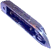
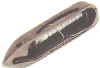
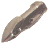
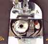
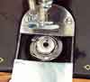

THE NEEDLEBAR
Recognising Shuttle Types
Index
Click thumbnail images for more details
'Long' Shuttle

Transverse/Reciprocating Shuttle

Vibrating Shuttle

Hybrid Shuttle
Oscillating Shuttle

Rotary Shuttle

Back to Main Index
© Alan Quinn 1998, 2004. All Rights Reserved
This web page or any portion of it may not be reproduced in any form without the prior written permission of the copyright holder